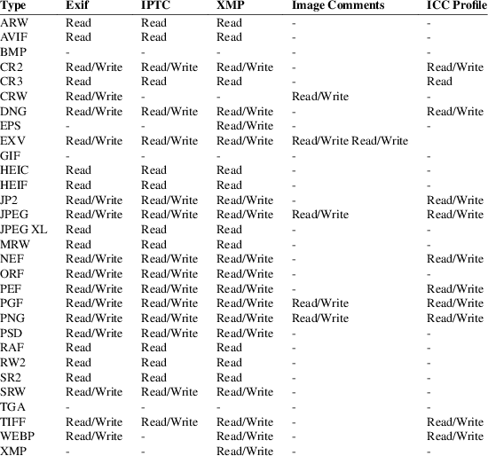
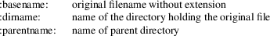
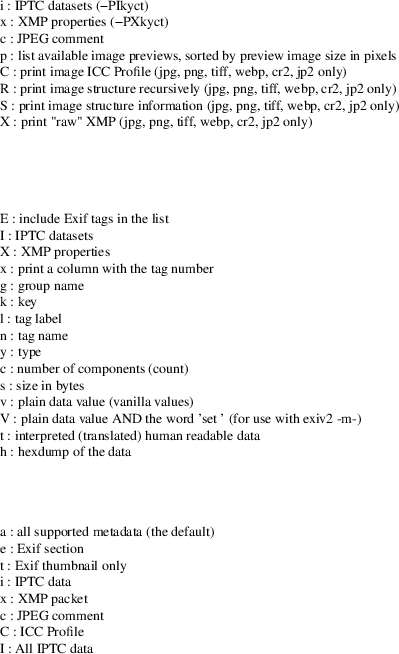
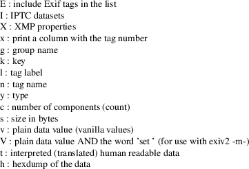
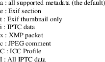

exiv2 − Image metadata manipulation tool
exiv2 [options] [action] file ...
exiv2 is
a program to read and write Exif, IPTC, XMP metadata and
image comments and can read many vendor makernote tags. The
program optionally converts between Exif tags, XMP
properties and IPTC datasets as recommended by the Exif
Standard, the IPTC Standard, the XMP specification and
Metadata Working Group guidelines.
The following image formats are supported:

|
• |
Support for GIF, TGA and BMP images is minimal: the image format is recognized, a MIME type assigned to it and the height and width of the image are determined. | ||
|
• |
Reading other TIFF-like RAW image formats, which are not listed in the table, may also work. | ||
|
• |
Support for BMFF file types such as CR3, HEIF, HEIC, AVIF, and JPEG XL is a build option. To check if this is enabled, use: |
$ exiv2
--version --verbose | grep bmff
enable_bmff=1
|
• |
Naked codestream JPEG XL files do not contain Exif, IPTC, or XMP metadata. |
The
action argument is only required if it is not clear
from the options which action is implied.
pr | print
Print image metadata. This is the default action, i.e., the command exiv2 image.jpg will print a summary of the image Exif metadata.
ex | extract
Extract metadata to *.exv, XMP sidecar (*.xmp) and thumbnail image files. Modification commands can be applied on-the-fly.
in | insert
Insert metadata from corresponding *.exv, XMP sidecar (*.xmp) and thumbnail files. Use option −S .suf to change the suffix of the input files. Since files of any supported format can be used as input files, this command can be used to copy the metadata between files of different formats. Modification commands can be applied on-the-fly.
rm | delete
Delete image metadata from the files.
ad | adjust
Adjust Exif timestamps by the given time. Requires at least one of the options −a time, −Y yrs, −O mon or −D day.
mo | modify
Apply commands to modify (add, set, delete) the Exif, IPTC and XMP metadata of image files. Requires option −c, −m or −M.
mv | rename
Rename files and/or set file timestamps according to the Exif create timestamp. Uses the value of tag Exif.Photo.DateTimeOriginal or, if not present, Exif.Image.DateTime to determine the timestamp. The filename format can be set with −r fmt, timestamp options are −t and −T. When no rename format is provided, the default is ´%Y%m%d_%H%M%S´ using definitions from strftime(3).
fi | fixiso
Copy the ISO setting from one of the proprietary Nikon or Canon makernote ISO tags to the regular Exif ISO tag, Exif.Photo.ISOSpeedRatings. Does not overwrite an existing standard Exif ISO tag.
fc | fixcom
Fix the character encoding of Exif Unicode user comments. Decodes the comment using the auto-detected or specified character encoding and writes it back in UCS-2. Use option −n to specify the current encoding of the comment if necessary.
exiv2 [ opt [arg] ]+ [ act ] file ...
|
option [arg] |
long option |
description |
||
|
-a |
||||
|
tim |
--adjust |
Modify time stamps. [+|-]HH[:MM[:SS[.mmm]]] |
||
|
-b |
||||
|
--binary |
This option is obsolete and should not be used. Reserved for test suite (with option -pC) |
|||
|
-c |
||||
|
txt |
--comment |
JPEG comment string to set in the image (’modify’ action). ... |
||
|
-d |
||||
|
tgt |
--delete |
Delete target(s) for the ’delete’ action. ... |
||
|
-D |
||||
|
+-n |
--days |
Time adjustment by a positive or negative number of days ... |
||
|
-e |
||||
|
tgt |
--extract |
Extract target(s) for the ’extract’ action. |
||
|
-f |
||||
|
--force |
Do not prompt before overwriting existing files ... |
|||
|
-F |
||||
|
--Force |
Do not prompt before renaming files (Force rename) ... |
|||
|
-g |
||||
|
key |
--grep |
Only output info for this Exiv2 key |
||
|
-h |
||||
|
--help |
Display help and exit. |
|||
|
-i |
||||
|
tgt |
--insert |
Insert target(s) for the ’insert’ action. ... |
||
|
-k |
||||
|
--keep |
Preserve file timestamps when updating files |
|||
|
-K |
||||
|
key |
--key |
Report key. Similar to -g (grep) however key must match exactly. |
||
|
-l |
||||
|
dir |
--location |
Location (directory) for files to be inserted or extracted. |
||
|
-m |
||||
|
file |
--modify |
read commands from cmd-file |
||
|
-M |
||||
|
cmd |
--Modify |
Command line for the ’modify’ action. ... |
||
|
-n |
||||
|
enc |
--encode |
Charset to decode Exif Unicode user comments. See: man 3 iconv_open |
||
|
-O |
||||
|
+-n |
--months |
Time adjustment by a positive or negative number of months, ... |
||
|
-p |
||||
|
mod |
|
Print report (common reports) |
||
|
-P |
||||
|
flg |
|
Print report (fine grained control) |
||
|
-q |
||||
|
--quiet |
Silence warnings and error messages from the Exiv2 library ... |
|||
|
-Q |
||||
|
lvl |
--log |
Set the log-level to ’d’(ebug), ’i’(nfo), ’w’(arning), ’e’(rror) |
||
|
-r |
||||
|
fmt |
--rename |
Filename format for the ’rename’ action. ... |
||
|
-S |
||||
|
suf |
--suffix |
Use suffix .suf for source files for insert command. |
||
|
-t |
||||
|
--timestamp |
Set the file timestamp according to the Exif create timestamp ... |
|||
|
-T |
||||
|
--Timestamp |
Only set the file timestamp according to Exif create timestamp ... |
|||
|
-u |
||||
|
--unknown |
Show unknown tags ... |
|||
|
-v |
||||
|
--verbose |
verbose |
|||
|
-V |
||||
|
--version |
Show the program version and exit. |
|||
|
-Y |
||||
|
+-n |
--years |
Time adjustment by a positive or negative number of years ... |
||
|
act |
||||
|
pr | ex | in | rm | ad | mo | mv | fi | fc |
||||
|
print, extract, insert, delete, adjust, modify, rename, fixiso, fixcom |
||||
|
cmd |
||||
|
See "Commands" below. |
||||
|
flg |
||||
|
E | I | X | x | g | k | l | n | y | c | s | v | t | h |
||||
|
Exif, IPTC, XMP, num, grp, key, label, name, type, count, size, vanilla, translated, hex |
||||
|
fmt |
||||
|
Default format is %Y%m%d_%H%M%S. |
||||
|
lvl |
||||
|
d | i | i | w | e |
||||
|
debug, info, warning, error |
||||
|
mod |
||||
|
s | a | e | t | v | h | i | x | c | p | i | C | R | S | X |
||||
|
summary, all, exif, translated, vanilla, hex, iptc, xmp, comment, preview, |
||||
|
ICC Profile, Recursive Structure, Simple Structure, raw XMP |
||||
|
tgt |
||||
|
a | c | e | i | p | t | x | C | X | XX | - |
||||
|
all, comment, exif, iptc, preview, thumb, xmp, ICC Profile, SideCar, RawXMP, stdin/out |
|
−h |
Display help and exit. |
|||
|
−V |
Show the program version and exit. |
When −V is combined with −v (Verbose version), build information is printed to standard output along with a list of shared libraries which have been loaded into memory. Verbose version is supported on Windows (MSVC, Cygwin and MinGW builds), macOS and Linux and is provided for test and debugging.
|
−v |
Be verbose during the program run. | ||
|
−q |
Silence warnings and error messages from the Exiv2 library during the program run (quiet). Note that options −v and −q can be used at the same time. | ||
|
−Q lvl |
Set the log-level to ’d’(ebug), ’i’(nfo), ’w’(arning), ’e’(rror) or ’m’(ute). The default log-level is ’w’. −Qm is equivalent to −q. All log messages are written to standard error. | ||
|
−u |
Show unknown tags (default is to suppress tags which don’t have a name). | ||
|
−g key |
Only keys which match the given key (grep). |
Multiple −g options can be used to filter info to less keys. Example: exiv2 -v -V -g webready -g time. The default exiv2 command prints a "summary report" which is quite short. When you use -g without a -pmod option, you do not get a summary report and in effect you get -g pattern -pa image ...
$ bin/exiv2 -g
Date http://clanmills.com/Stonehenge.jpg
Exif.Image.DateTime Ascii 20 2015:07:16 20:25:28
Exif.Photo.DateTimeOriginal Ascii 20 2015:07:16 15:38:54
Exif.Photo.DateTimeDigitized Ascii 20 2015:07:16 15:38:54
Exif.NikonWt.DateDisplayFormat Byte 1 Y/M/D
Exif.GPSInfo.GPSDateStamp Ascii 11 2015:07:16
Xmp.xmp.ModifyDate XmpText 25 2015-07-16T20:25:28+01:00
You may use
-pmod filters to further filter output. For example:
$ bin/exiv2 -px -g Date http://clanmills.com/Stonehenge.jpg
Xmp.xmp.ModifyDate XmpText 25 2015-07-16T20:25:28+01:00
The option -g
(--grep) applies to keys and not values.
The key may finish with the optional modifier /i to indicate
case insensitive.
|
−K key |
Only report data for given key. |
Multiple −K
options can be used to report more than a single key.
$ exiv2 −K Exif.Photo.DateTimeDigitized -K
Exif.Photo.DateTimeOriginal −pt R.jpg
Exif.Photo.DateTimeOriginal Ascii 20 2011:09:18 16:25:48
Exif.Photo.DateTimeDigitized Ascii 20 2011:09:18
16:25:48
|
−n enc |
Charset to use to decode Exif Unicode user comments. enc is a name understood by iconv_open(3), e.g., ’UTF-8’. | ||
|
−k |
Preserve file timestamps when updating files (keep). Can be used with all options which update files. The flag is ignored by read-only options. | ||
|
−t |
Set the file timestamp according to the Exif create timestamp in addition to renaming the file (overrides −k). This option is only used with the ’rename’ action. See Exif DateTime below for additional information. | ||
|
−T |
Only set the file timestamp according to the Exif create timestamp, do not rename the file (overrides −k). This option is only used with the ’rename’ action. Note: On Windows you may have to set the TZ environment variable for this option to work correctly. See Exif DateTime below for additional information. | ||
|
−f,−F |
These options are used by the commands ’rename’ and ’extract’ to determine the file overwrite policy. These options are usually combined with -v/--verbose to provide additional status output. |
The options --force and --Force apply to the ’rename’ command. The ’extract’ command treats --force and --Force as permission to overwrite.
The default
behaviour is to prompt the user.
-f = Do not prompt before overwriting existing files.
-F = Do not prompt before renaming files. Appends
’_1’ (’_2’, ...) to the name of the
new file. For example:
$ curl --silent
-O http://clanmills.com/Stonehenge.jpg
$ exiv2 --verbose --Force rename Stonehenge.jpg
File 1/1: Stonehenge.jpg
Renaming file to ./20150716_153854.jpg
$ curl --silent -O http://clanmills.com/Stonehenge.jpg
$ exiv2 --verbose --Force rename Stonehenge.jpg
File 1/1: Stonehenge.jpg
Renaming file to ./20150716_153854_1.jpg
The ’rename’ command will only overwrite files when the option --force is used. The option --Force is provided to avoid unintentional loss of valuable image files.
The ’extract’ command will overwrite files when either --force or --Force is used. Overwriting extracted files will not cause the loss of image files.
|
−r fmt |
Filename format for the ’rename’ action. The format string uses strftime(3) definitions and supports the following keywords: |

Note that the colons are part of the keyword.
−a time
Time adjustment in the format [−]HH[:MM[:SS]]. This option is only used with the ’adjust’ action. Examples: 1 adds one hour, 1:01 adds one hour and one minute, −0:00:30 subtracts 30 seconds. See Exif DateTime below for additional information.
|
−Y yrs |
Time adjustment by a positive or negative number of years, for the ’adjust’ action. | ||
|
−O mon |
Time adjustment by a positive or negative number of months, for the ’adjust’ action. | ||
|
−D day |
Time adjustment by a positive or negative number of days, for the ’adjust’ action. |
−p mode
Print mode for the ’print’ action. Possible modes are:

−P flgs
Print flags for fine control of the tag list (’print’ action). Allows control of the type of metadata as well as data columns included in the print output. Valid flags are:

|
−d tgt |
Delete target(s) for the ’delete’ action. Possible targets are: |

|
−i tgt |
Insert target(s) for the ’insert’ action. Possible targets are the same as those for the −d option, plus an optional modifier: |
X : Insert metadata from an XMP sidecar file <file>.xmp. The remaining insert targets determine what metadata to insert from the sidecar file. Possible are Exif, IPTC and XMP and the default is all of these. Note that the inserted XMP properties include those converted to Exif and IPTC.
XX: Insert "raw" XMP metadata from a sidecar (see option -pX)
- : Read from
stdin. This option is intended for "filter"
operations such as:
$ exiv2 -e{tgt}- filename | xmllint .... | exiv2
-i{tgt}- filename
Only JPEG thumbnails can be inserted (not TIFF thumbnails), and must be named file−thumb.jpg.
|
−e tgt |
Extract target(s) for the ’extract’ action. Possible targets are the same as those for the −d option, plus a target to extract preview images and a modifier to generate an XMP sidecar file: |
p[<n>[,<m> ...]] : Extract preview images. The optional comma separated list of preview image numbers is used to determine which preview images to extract. The available preview images and their numbers are displayed with the ’print’ option −pp.
C : Extract embedded ICC profile to <file>.icc
X : Extract metadata to an XMP sidecar file <file>.xmp. The remaining extract targets determine what metadata to extract to the sidecar file. Possible are Exif, IPTC and XMP and the default is all of these.
XX: Extract
"raw" XMP metadata to a sidecar (see -pX)
You may not use modify commands with the -eXX option and
only XMP is written to the sidecar.
− Output to stdout (see -i tgt for an example of this feature)
|
−c txt |
JPEG comment string to set in the image (’modify’ action). This option can also be used with the ’extract’ and ’insert’ actions to modify metadata on-the-fly. |
−m file
Command file for the ’modify’ action. This option can also be used with the ’extract’ and ’insert’ actions to modify metadata on-the-fly. -m- represents standard-input.
|
−M cmd |
Command line for the ’modify’ action. This option can also be used with the ’extract’ and ’insert’ actions to modify metadata on-the-fly. The format for the commands is the same as that of the lines of a command file. | ||
|
−l dir |
Location (directory) for files to be inserted or extracted. |
−S .suf
Use suffix .suf for source files in ’insert’ action.
Commands for the ’modify’ action can be read from a command file, e.g.,
$ exiv2 −m cmd.txt image.jpg
or given on the command line, as in
$ exiv2 −M"add Iptc.Application2.Credit String Mr. Smith" image.jpg
Note the quotes. Multiple −m and −M options can be combined, and a non-standard XMP namespace registered.
$ exiv2 −M"reg myprefix http://ns.myprefix.me/" −M"add Xmp.myprefix.Whom Mr. Smith" −M"set Exif.Image.Artist Mr. Smith" image.jpg
When writing Exif, IPTC and XMP metadata, exiv2 enforces only a correct metadata structure. It is possible to write tags with types and values different from those specified in the standards, duplicate Exif tags, undefined tags, or incomplete metadata. While exiv2 is able to read all metadata that it can write, other programs may have difficulties with images that contain non standard-conforming metadata.
Command
format
The format of a command is
set | add | del key [[type] value]
|
set |
Set the value of an existing tag with a matching key or add the tag. | ||
|
add |
Add a tag (unless key is a non−repeatable IPTC key; nothing prevents you from adding duplicate Exif tags). | ||
|
del |
Delete all occurrences of a tag (requires only a key). | ||
|
key |
Exiv2 Exif, IPTC or XMP key. | ||
|
type |
Exif keys: Byte | Ascii | Short | Long | Rational | Undefined | SShort | SLong | SRational | Comment |
IPTC keys: String | Date | Time
| Short | Undefined
XMP keys: XmpAlt | XmpBag | XmpSeq | LangAlt
A default type is used if none is explicitly given. The default is determined based on key.
|
value |
The remaining text on the line is the value. It can optionally be enclosed in single quotes (’value’) or double quotes ("value"). |
The value is optional. Not providing any value is equivalent to an empty value ("") and is mainly useful to create an XMP array property, e.g., a bag.
The format of Exif Comment values include an optional charset specification at the beginning. Comments are used by the tags Exif.Photo.UserComment, Exif.GPSInfo.GPSProcessingMethod and Exif.GPSInfo.GPSAreaInformation. Comments are stored as Undefined tags with an 8 byte encoding definition follow by the encoded data. The charset is specified as follows:
[charset=Ascii|Jis|Unicode|Undefined]
comment
charset=Undefined is the default
$ exiv2
-M’set Exif.Photo.UserComment charset=Ascii My
photo’ x.jpg
$ exiv2 -pa --grep UserComment x.jpg
Exif.Photo.UserComment Undefined 16 My photo
$ exiv2 -pv --grep UserComment x.jpg
0x9286 Photo UserComment Undefined 16 charset=Ascii My
photo
$ exiv2
-M’set Exif.Photo.UserComment charset=Unicode
\u0052\u006f\u0062\u0069\u006e’ x.jpg
$ exiv2 -pa --grep UserComment x.jpg
Exif.Photo.UserComment Undefined 18 Robin
$ exiv2 -pv --grep UserComment x.jpg
0x9286 Photo UserComment Undefined 18 charset=Unicode
Robin
$ exiv2
-M’set Exif.GPSInfo.GPSProcessingMethod
HYBRID-FIX’ x.jpg
$ exiv2 -pa --grep ProcessingMethod x.jpg
Exif.GPSInfo.GPSProcessingMethod Undefined 18 HYBRID-FIX
$ exiv2 -pv --grep ProcessingMethod x.jpg
0x001b GPSInfo GPSProcessingMethod Undefined 18
HYBRID-FIX
The format for an IPTC Date value is: YYYY−MM−DD (year, month, day)
The format for an IPTC Time value is: HH:MM:SS (hours, minutes, seconds) and may optionally be followed by: -HH:MM or +HH:MM (hours, minutes ahead/behind UTC)
The format of
Rational (and SRational) is one of: integer
| integer/integer | Fnumber | number
Rational Examples:
$ exiv2
"-Mset Exif.Photo.MaxApertureValue 557429/62500"
X.jpg
$ exiv2 "-Mset Exif.Photo.MaxApertureValue F5.6"
X.jpg
The Rational format Fnumber is for the convenience of setting aperture values. Aperture values are stored in Exif is an APEX value which can be evaluated by the expression:
apex-value =
log(Fnumber) * 2.0 / log(2.0)
number = exp(apex-value * log(2.0) / 2.0)
The Rational format Fnumber is valid for any Rational, even when the key is not an Aperture. More information about APEX value is available from: http://en.wikipedia.org/wiki/APEX_system
The format of
XMP LangAlt values includes an optional language
qualifier:
lang="language-code" text
The double quotes around the language-code are optional. If no languge qualifier is supplied, then the value of "x-default" is used. More information on the language format can be found at: https://www.ietf.org/rfc/rfc3066.txt
$ exiv2
-M’set Xmp.dc.title lang="de-DE"
Euros’ X.jpg
$ exiv2 -M’set Xmp.dc.title lang="en-GB"
Pounds’ X.jpg
$ exiv2 -M’set Xmp.dc.title lang="en-US" In
God We Trust’ X.jpg
$ exiv2 -M’set Xmp.dc.title lang=fr-FR Euros’
X.jpg
$ exiv2 -M’set Xmp.dc.title lang=jp Yen’ X.jpg
$ exiv2 -M’set Xmp.dc.title All others pay cash’
X.jpg
To remove a
language specification, set the value to ’’
(empty string)
$ exiv2 -M’set Xmp.dc.title
lang="en-US"’ X.jpg
To remove all language specifications, delete the key:
$ exiv2 -M’del Xmp.dc.title’ X.jpg
To register additional XMP namespaces, combine the command
with:
reg prefix namespace
Command file
format
Empty lines and lines starting with # in a command
file are ignored (comments). Remaining lines are commands as
described above.
Exiv2 displays metadata tags and values.
The tag is a triplet of Family.Group.Tagname. The following groups are defined for the family Exif:
GPSInfo Canon
Fujifilm NikonMe OlympusFe7 SonyMisc2b
Image CanonCf NikonPc OlympusFe9 SonyMisc3c
Image2 CanonCs Nikon1 NikonPreview OlympusFi SonyMinolta
Image3 CanonFi Nikon2 NikonSi01xx OlympusIp SonySInfo1
Iop CanonPa Nikon3 NikonSi02xx OlympusRd
MakerNote CanonPi NikonAFT NikonSiD300a OlympusRd2 Samsung2
MpfInfo CanonPr NikonAf NikonSiD300b OlympusRi
SamsungPictureWizard
Photo CanonSi NikonAf2 NikonSiD40 SamsungPreview
SubImage1 CanonTi NikonAf22 NikonSiD80 Sigma
SubImage2 NikonCb1 NikonVr
SubImage3 Casio NikonCb2 NikonWt Sony1
SubImage4 Casio2 NikonCb2a Sony1Cs
SubImage5 NikonCb3 Olympus Sony1Cs2
SubImage6 Minolta NikonCb4 Olympus2 Sony1MltCs7D
SubImage7 MinoltaCs5D NikonFi OlympusCs Sony1MltCsA100
SubImage8 MinoltaCs7D NikonFl1 OlympusEq Sony1MltCsNew
SubImage9 MinoltaCsNew NikonFl2 OlympusFe1 Sony1MltCsOld
SubThumb1 MinoltaCsOld NikonFl3 OlympusFe2 Sony2
Thumbnail NikonIi OlympusFe3 Sony2Cs
Panasonic NikonLd1 OlympusFe4 Sony2Cs2
Pentax PanasonicRaw NikonLd2 OlympusFe5 Sony2Fp
PentaxDng NikonLd3 OlympusFe6 SonyMisc1
Exiv2 supports Exif 2.2 Standard Tags. Exiv2 also supports reading and writing manufacturer’s MakerNote. The information in Exif.Photo.MakerNote is encoded as manufacturer’s sub-records. For example, CanonCs are Camera Settings, NikonAf are Nikon Auto Focus records, NikonCb are Nikon Color Balance Records. Every tag is defined by a unique tagId (16 bit integer) which is unique within a Group.
You can query Exiv2 groups and tags with the sample program taglist which is documented in README-SAMPLES.md
Exif Metadata values are defined in the Exif Standard. All data is an array of data elements. The Count defines the number elements in the array. All elements in an array have the same type.
Type
Explanation
1 BYTE An 8-bit unsigned integer.
2 ASCII 7-bit ASCII. NUL terminated.
3 SHORT A 16-bit (2-byte) unsigned integer.
4 LONG A 32-bit (4-byte) unsigned integer
5 RATIONAL Two LONGs. Numerator, denominator.
7 UNDEFINED An 8-bit byte.
8 SSHORT A 16-bit (2-byte) signed integer.
9 SLONG A 32-bit (4-byte) signed integer.
10 SRATIONAL Two SLONGs. Numerator, denominator.
The printing flag t = translated and is intended for human use. Scripts should never use translated values as they are localised and the format may change as Exiv2 evolves. The printing flag v reports the values recorded in the metadata and should be used by scripts.
An Exif DateTime string is stored as 20 ascii bytes (including trailing nul) in the format:
YYYY:MM:DD HH:MM:SS
The exiv2 command-line program options -t and -T will accept files in which the Date has been incorrectly stored as YYYY-MM-DD. The option -a enables the user to adjust the DateTime in the file and applies the YYYY:MM:DD HH:MM:SS standard.
Exiv2 can read an optional configuration file ~/.exiv2 on Unix systems and %USERPROFILE%\exiv2.ini on Windows (using a Visual Studio build). Cygwin and MinGW/msys2 follow the unix convention and use ~/.exiv2 You can determine the location of the configuration file with the command:
$ exiv2
--verbose --version --grep config_path
exiv2 0.27.0.1
config_path=/Users/rmills/.exiv2
The purpose of the configuration file is to define your own lenses for recognition by Exiv2. The configuration file is in Windows .ini format and has sections for each of the major camera manufactures canon,nikon,pentax,minolta,olympus and sony. The lens metadata is stored as a integer called the lensID. You can change the lens name associated with any lensID.
$ cat ~/.exiv2
[nikon]
146=Robin’s Sigma Lens <--- The name of your
lens
You obtain the
lensID for your camera with the command:
$ exiv2 -pv --grep lens/i
http://clanmills.com/Stonehenge.jpg
0x0083 Nikon3 LensType Byte 1 14
0x0084 Nikon3 Lens Rational 4 180/10 2500/10 35/10 63/10
0x008b Nikon3 LensFStops Undefined 4 55 1 12 0
0x000c NikonLd3 LensIDNumber Byte 1 146 <--- This number
0x000d NikonLd3 LensFStops Byte 1 55
$ exiv2 *.jpg
Prints a summary of the Exif information for all JPEG files
in the directory. The summary report is rather brief and
presentation does not use the Family.Group.Tag
convention.
If you use --grep pattern, the default becomes -pa. See -g/grep above.
$ exiv2 -g Date
http://clanmills.com/Stonehenge.jpg
$ exiv2 −pi image.jpg
Prints the IPTC metadata of the image.
$ exiv2 rename
img_1234.jpg
Renames img_1234.jpg (taken on 13−Nov−05 at
22:58:31) to 20051113_225831.jpg
$ exiv2
−r’basename_%Y%m’ rename img_1234.jpg
Renames img_1234.jpg to img_1234_200511.jpg
$ exiv2
−et img1.jpg img2.jpg
Extracts the Exif thumbnails from the two files into
img1−thumb.jpg and img2−thumb.jpg.
$ exiv2
−it img1.jpg img2.jpg
Inserts (copies) metadata from img1.exv to img1.jpg and from
img2.exv to img2.jpg.
$ exiv2
−ep1,2 image.jpg
Extracts previews 1 and 2 from the image to the files
image−preview1.jpg and image−preview2.jpg.
$ exiv2
−eiX image.jpg
Extracts IPTC datasets into an XMP sidecar file image.xmp
and in the process converts them to "IPTC Core"
XMP schema.
$ exiv2
−iixX image.jpg
Inserts IPTC and XMP metadata from an XMP sidecar file
image.xmp into image.jpg. The resulting IPTC datasets are
converted from the "IPTC Core" XMP schema
properties in the sidecar file to the older IPTC IIM4
format. The inserted XMP properties include those in the
"IPTC Core" XMP schema.
$ exiv2
−M"set Exif.Photo.UserComment charset=Ascii New
Exif comment" image.jpg
Sets the Exif comment to an ASCII string.
$ exiv2
−M"set Exif.GPSInfo.GPSLatitude 4/1 15/1
33/1" \ −M"set Exif.GPSInfo.GPSLatitudeRef
N" image.jpg
Sets the latitude to 4 degrees, 15 minutes and 33 seconds
north. The Exif standard stipulates that the GPSLatitude tag
consists of three Rational numbers for the degrees, minutes
and seconds of the latitude and GPSLatitudeRef contains
either ’N’ or ’S’ for north or south
latitude respectively.
$ exiv2
−l/tmp -S.CRW insert /data/*.JPG
Copy all metadata from CRW files in the /tmp directory to
JPG files with corresponding basenames in the /data
directory. Note that this copies metadata as is, without any
modifications to adapt it to the requirements of the target
format. Some tags copied like this may not make sense in the
target image.
https://exiv2.org/sample.html#modify
Sample command files.
https://exiv2.org/metadata.html
Taglists with key and default type values.
exiv2
was written by Andreas Huggel and others.
The Exiv2 project web site is https://exiv2.org.
The code is hosted on GitHub at
https://github.com/exiv2/exiv2